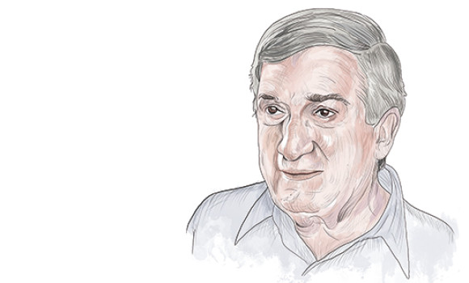
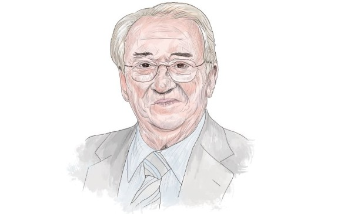
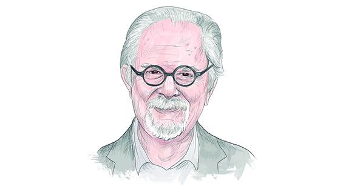
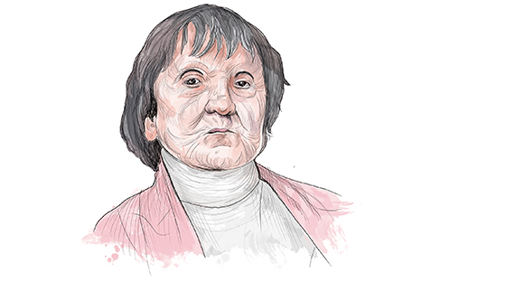

ABUELOS DEL PUEBLO

Nicanor Restrepo Santamaría
- Facultad de Minas de la Universidad Nacional.
- Presidente de Suramericana
- (1941-2015)
Leer más

Belisario Betancur Cuartas
- Doctor en Derecho y Economía
- Presidente de Colombia
- (1923-2018)
Leer más

Fernando Botero
- Estudió en Europa a los grandes maestros del arte.
- “Soy un trabajador incansable”
- Nació en Medellín en 1932.
Leer más

Débora Arango
- acuarelista y ceramista antioqueña.
- Pintora
- (1907-2005)
Leer más